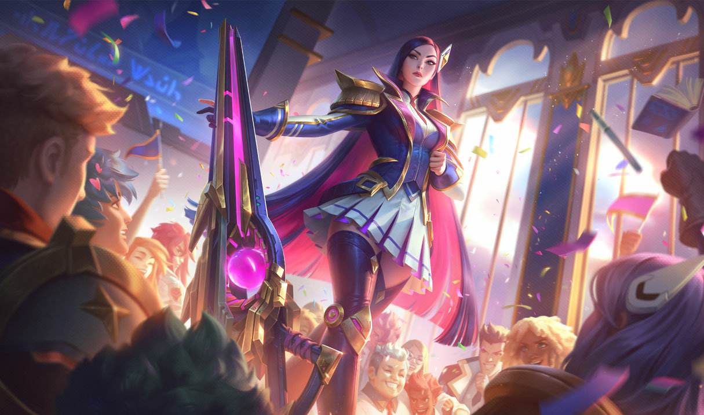

CAITLYN La sheriff de Piltover
Reconocida como su mejor pacificadora, Caitlyn es también la mejor arma de Piltover para librar a la ciudad de sus elusivos elementos criminales. A menudo trabaja con Vi, y actúa como un frío y eficiente contrapunto para la naturaleza más impetuosa de su socia. A pesar de que lleva un rifle hextech único, el arma más poderosa de Caitlyn es su inteligencia superior, lo que le permite colocar trampas elaboradas para cualquier infractor de la ley lo suficientemente necio como para operar en la Ciudad del Progreso.